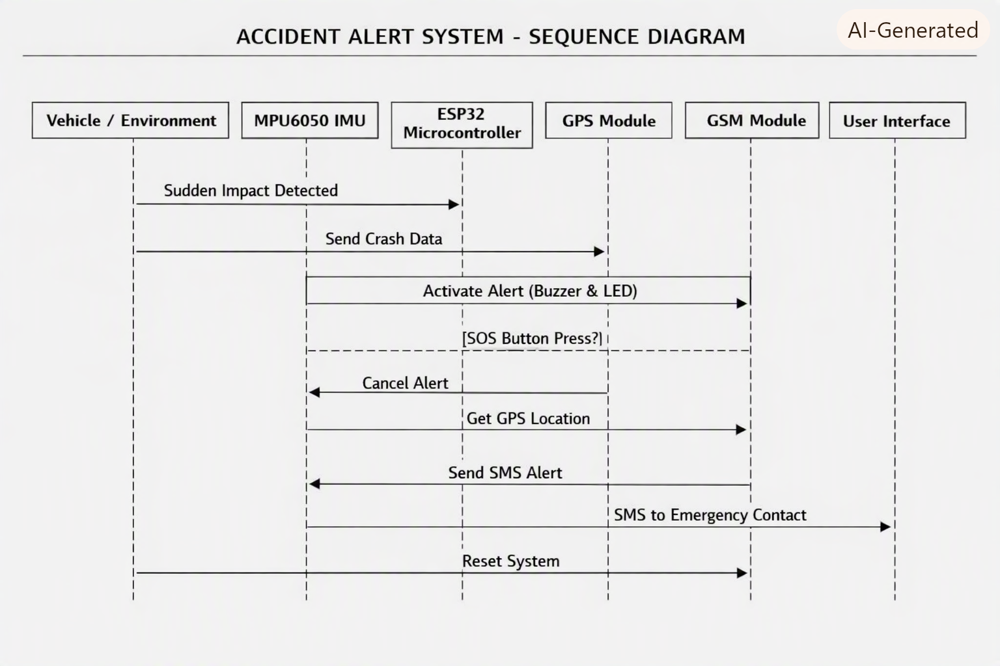

Detailed Functional Interaction of Components
1) MPU6050 - Impact Sensing Layer
The MPU6050 is responsible for detecting abnormal motion that may indicate an accident. Using its accelerometer (and optionally gyroscope), it provides real-time movement data to the ESP32. When acceleration patterns exceed a defined threshold, it flags a potential crash event for validation. Its accuracy and threshold tuning strongly affect false positives and detection reliability.
2) ESP32 - Decision & Control Layer
The ESP32 is the brain of the system. It initializes and manages all connected modules, continuously reads sensor data, runs the crash-detection logic, and decides when an alert should be triggered. It also formats emergency messages and sends the required commands to GPS and GSM modules. In short, it coordinates the full workflow from monitoring to notification.
3) NEO-6M GPS - Location Source
The NEO-6M provides geographic coordinates needed in an emergency alert. After a crash event is detected, the ESP32 requests latitude and longitude from this module so responders or contacts can locate the incident. If satellite lock is strong, it provides live location; otherwise, the system may rely on the most recent valid fix after retries.
4) SIM800L GSM - Communication Layer
The SIM800L handles cellular communication with emergency contacts. Once the ESP32 prepares the alert message, SIM800L sends it as SMS and can also place a call if configured. This makes the system independent of WiFi and suitable for outdoor/road scenarios, as long as network coverage and power stability are adequate.
5) End-to-End Behavior
Crash detect -> GPS acquire -> SMS send -> call trigger. This sequence keeps the system modular and testable.
Project Diagrams
{kind=link}

Sequence Diagram
Shows the end-to-end event flow from impact sensing to communication output.

Use-Case Diagram
Represents system actors and key interaction goals in emergency response.

Architecture Diagram
Illustrates module-level integration of sensing, compute, location, and alert layers.
Successful Flow Evidence
.png)
GPS Lock + SMS Sent
System acquired GPS lock and successfully sent SMS to emergency contacts/services.

Short Emergency Call
Demonstrates successful call trigger to an emergency number.

Call + SMS Success
Combined alert mode: both call and message were successfully dispatched.